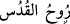
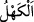

kıyâmet gününde pişmanlık ve hüsran sebebi olacaktır.
Âyette Hz. Îsâ’nın annesinin de zikredilmesinin sebebi, insanların Hz. Meryem
hakkında ileri-geri konuşmalarına cevap olmak üzeredir.
Sonra Allah Teâlâ verdiği nimetleri bir bir saymaktadır:
“Hani seni mukaddes ruh (Cebrail) ile desteklemiştim.” “” temiz Cibrîl
demektir. “Kuds” kelimesi temiz olmak anlamındadır. Ruh kelimesinin ona izafe
edilmesi ise onu medh etmek içindir. Çünkü Cebrâil (a.s.) “temiz olma” özelliğine en
mükemmel şekliyle sahip bulunmaktadır.
Hz. Îsâ’nın Cebrâil (a.s.) ile desteklenmesi ise Hz. Îsâ’nın delilini yerleştirmesi ve
pekiştirmesi mânâsınadır.
“Beşikte iken de, olgunluk çağında da insanlarla konuşuyordun.” “Hz. Îsâ
insanlarla, çocukken de olgunluk çağında da aynı şekilde konuştu. Bu iki devredeki
sözleri arasında, ne kamil bir aklın mahsulü olma açısından, ne de peygamberlere ve
hikmet ehline mahsus mükemmelliğe uygun olma açısından hiçbir farklılık yoktur.
Nitekim Hz. Îsâ beşikteyken ya da daha ana kucağındayken şöyle konuşmuştur: “Ben
Allah’ın kuluyum, O bana Kitap verdi ve beni peygamber yaptı. Nerede olursam
olayım, O beni mübarek kıldı. Sağ olduğum sürece bana namazı ve zekâtı emretti.”
(Meryem, 19/31-32) Hz. Îsâ, yetişkin hale geldiğinde ise vahiy ve peygamberlik ile
konuşmuştur.
Hz. Îsâ’nın her iki zamanda da aralarında fark olmayacak kadar aynı şekilde
konuşması ve aynı şeyleri söylemesi, ne ondan önce, ne de sonra hiçbir peygambere
nasip olmayan büyük bir mucizedir.
Hz. Îsâ’dan sâdır olan her mûcize, onun için bir nimet olduğu gibi aynı zamanda
annesi Hz. Meryem için de bir nimet olmaktadır. Çünkü bu mûcizeler onun insanların
attıkları iftiralardan ve yaptıkları ithamlardan uzak, suçsuz ve masum olduğunu
göstermektedir.
Hz. Meryem’in hamile kalması, diğer kadınlar gibi bir erkekle münasebetten
kaynaklanmayıp Allah’tan (gelen) bir “ruh” vasıtasıyla gerçekleşmiştir. Nitekim Allah
Teâlâ şöyle buyurmaktadır: “İmran’ın kızı Meryem’i de (Allah örnek gösterdi). O
iffetini korudu, biz de ona ruhumuzdan üfledik.” (et-Tahrim, 66/12)
Bu sadece Hz. Meryem’e nasip olmuş özel bir nimettir. Yine Hz. Îsâ’nın doğumu ve
yaratılışı da bir erkek menisi vasıtasıyla olmamıştır. O Allah Teâlâ’nın Hz. Meryem’in
rahmine ilkâ ettiği (yerleştirdiği) “kelime”si ve O’ndan bir “ruh”tur. Bu da Hz. Îsâ’ya
mahsus bir nimettir.
Âyetteki “” ise erkeklerin otuz yaşını geçtikten sonra artık saç-sakalına ak
düşmeye başladığı olgunluk dönemidir.
Denilmiştir ki: “Hz. Îsâ’nın olgunluk çağında konuşmasından maksat, onun kıyâmete
yakın gökyüzünden indikten sonraki konuşmasıdır. Çünkü o, olgunluk çağına gelmeden
gökyüzüne kaldırılmıştı. Bu âyet de onun tekrar nüzûlüne (inmesine) delildir.”